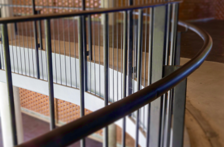
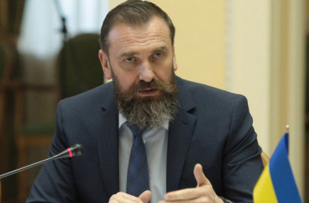
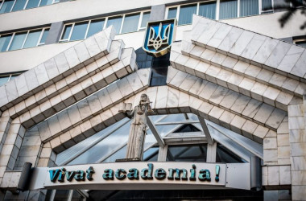
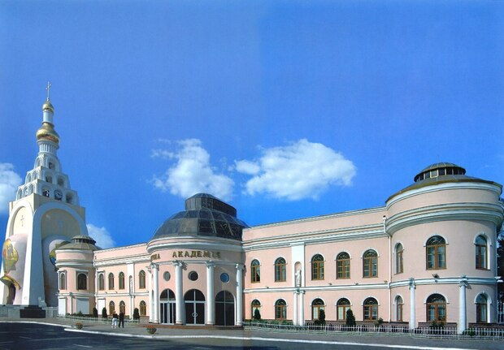
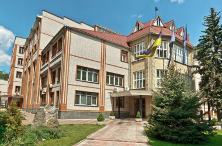

Україна має розгалужену систему вищої освіти, яка включає в себе багато університетів, інститутів, академій та коледжів. Вища освіта в Україні надається на різних рівнях і включає бакалаврські, магістерські та докторські програми. Найвищим рівнем вищої освіти є докторські програми, які зазвичай виконуються в національних університетах та академіях. Вони передбачають проведення оригінальних наукових досліджень та написання докторської дисертації. Багато університетів в Україні пропонують бакалаврські та магістерські програми з різних галузей знань, таких як інженерія, природничі науки, соціальні науки, гуманітарні науки, медицина, бізнес, мистецтво та багато інших. Студенти можуть вибрати спеціалізацію, яка відповідає їхнім інтересам та майбутнім кар'єрним планам. Деякі з найпрестижніших вищих навчальних закладів в Україні включають Київський національний університет імені Тараса Шевченка, Національний технічний університет України "Київський політехнічний інститут", Львівський національний університет імені Івана Франка, Одеський національний університет імені І. І. Мечникова, та багато інших.
Рівень освіти в Україні вважається досить високим і має деякі особливості. Освітня система України базується на принципах загального, дошкільного, початкового, базового та професійного навчання. Нижче наведено загальний огляд рівнів освіти в Україні: Дошкільна освіта: Дошкільна освіта є необов'язковою, але широко поширеною. Дошкільні навчальні заклади включають дитячі садки та ясла. Ці заклади забезпечують догляд, розвиток та підготовку дітей віком від 1 до 6 років до школи Початкова освіта: Початкова освіта в Україні починається з 6 років і триває 4 роки. У цей період діти вчаться основам читання, письма, математики та інших предметів. Базова загальна середня освіта: Базова загальна середня освіта триває 5 років і є обов'язковою для всіх учнів. Протягом цього періоду учні вивчають широкий спектр предметів, включаючи мови, математику, науку, соціальні науки, мистецтво та фізичну культуру. Середня освіта: Середня освіта в Україні має загальний та профільний напрямки. Загальна середня освіта триває 2 роки і надає студентам ширший спектр знань та вмінь у різних дисциплінах. Профільна середня освіта триває 3 роки і спрямована на поглиблене вивчення певних предметів або професійну підготовку.

Новини міністерства освіти та науки України
30.05.2023 - Гуртожитки деяких вишів передадуть переміщеним особам
 Приміщення гуртожитків деяких закладів вищої освіти планують передати у користування внутрішньо переміщеним особам. Про таку ініціативу йшлося під час наради народних депутатів з міністром освіти і науки. За підсумками наради сторони домовилися про проведення Міністерством освіти і науки аналізу нерухомого майна закладів вищої освіти (гуртожитки, корпуси тощо). Також буде підготований перелік об’єктів нерухомості для подальшого опрацювання алгоритму передання приміщень та майна у користування внутрішньо переміщеним особам.
30.05.2023 - МОН вкотре доручає вишам виконувати мовне законодавство
Міністерство освіти і науки просить керівників закладів вищої та фахової передвищої освіти вжити заходів щодо забезпечення виконання вимог Закону України «Про забезпечення функціонування української мови як державної». Відповідний лист підписаний заступником міністра Михайлом Винницьким на вимогу уповноваженого із захисту державної мови. У МОН зазначають, що на розгляд уповноваженого у 2022 році надійшло 44 звернення громадян, які стосувалися порушень законодавства про державну мову в закладах вищої та фахової передвищої освіти. Найчастіше повідомлення містили інформацію про застосування недержавної мови під час викладання навчальних дисциплін та використання навчальних матеріалів, виконаних недержавною мовою. Через це, мовний омбудсмен наголошує на необхідності посилення інституційного контролю за забезпеченням виконання вимог законодавства щодо застосування державної мови в межах освітнього процесу. З метою забезпечення реалізації державної політики, спрямованої на захист державної мови, МОН на прохання мовного омбудсмена рекомендує керівникам вишів передбачити організацію безкоштовних курсів української мови для дорослих, а також створити онлайн-курси та інші заходи з сприяння вивченню української мови громадянами, які проживають на тимчасово окупованій території. Окрім того, вишам рекомендовано підвищити рівень володіння державною мовою педагогічними та науково-педагогічними працівниками.
30.05.2023 - Лісовий і Бабак синхронно визнали себе ненауковцями
Міністр освіти і науки Оксен Лісовий і голова освітнього комітету ВР Сергій Бабак очікувано й одночасно відмовилися від отриманих ними «наукових ступенів». Відповідні заяви були оприлюднені міністром і депутатом у вівторок 30 травня. Мотивація обох чиновників є дещо схожою – обидва називають відмову від наукового ступеня необхідністю позбавлення від старої культури чиновників, у якій наявність наукового ступеня скоріше є не науковим досягненням, а навпаки свідчить про набуття формальних статусів. «В академічному світі науковий ступінь – це про цінність та довіру, а не про здобуття, а не отримання. Постсовєцька культура це дещо викривила, тож маємо це виправити і сформувати нову культуру академічної доброчесності, де буде місце лише для справжньої послідовної науки. Як військову форму мають право носити лише військові, так і мати наукові ступені, на мою думку, повинні лише науковці», – наголосив міністр Лісовий. За його словами, він написав відповідну заяву і вже не є кандидатом наук. «Триматися за формальні для себе статуси не збираюся. Набагато важливіші реальні справи та дії», – наголосив Лісовий. Своєю чергою Сергій Бабак, цитуючи українського філософа Володимира Єрмоленка, зауважив, що «тепер в суспільстві панує лицемірство, марнославство, прагнення вивищитися над іншими». «Формалізовані наукові ступені часто є «необхідним аксесуаром» і не відображають внутрішньої суті науковця. Науковця, в першу чергу, визначають якість, цитованість наукових праць та впроваджені наукові розробки, а не формалізований диплом. Формування нової культури в суспільстві варто починати з відмови від старої. Це стосується і питань академічної доброчесності», – зазначає Бабак. Він також повідомив, що експертизи його докторської дисертації показали часткові збіги тексту з іншими роботами. «А через те, що наша задача – сформувати нову культуру академічної доброчесності, будемо відмовлятися від старої. І потрібно починати з себе. Тому вчора я офіційно відмовився від наукового ступеню доктора технічних наук», – написав Бабак. Як відомо, в одному з нещодавніх інтервʼю, відповідаючи на запитання щодо необхідності набуття наукового ступеня, Оксен Лісовий заявив, що це стало вибудовою певної системи захисту, зокрема, збереження посади під час керівництва МОН Дмитром Табачником. «Це був 2010 рік. У мене і взагалі в українській освіті був важкий період, який почався після періоду надій, пов’язаного з приходом у МОН Івана Вакарчука. Ми перейшли знову до Табачника. Почалися досить серйозні репресії всіх, хто не так думав і не так дихав. І ми вибудовували певну систему захисту, у тому числі набували певних формальних статусів», – наголосив міністр освіти і науки Оксен Лісовий.
29.05.2023 - Завершується реєстрація на вступні іспити до магістратури
Добігає кінця реєстрація абітурієнтів для участі в єдиному вступному іспиті та єдиному фаховому вступному випробуванні, які необхідні для вступу в магістратуру. За інформацією Міністерства освіти і науки, до приймальних комісій закладів вищої освіти вже звернулися й отримали екзаменаційні листки майже 70 тисяч учасників вступних випробувань. Бажання складати ЄВІ в Україні виявили понад 67,5 тисяч осіб. Ще понад 2 тисячі повідомили про намір складати іспит за кордоном. Також вступники у магістратуру, які планують вступати на спеціальності галузей знань «Соціальні та поведінкові науки», «Журналістика», «Управління та адміністрування», «Право», «Публічне управління та адміністрування», «Міжнародні відносини», окрім ЄВІ, мають пройти ще й єдине фахове вступне випробування у вигляді предметного тестування. Серед предметних тестувань лідерами за популярністю серед абітурієнтів є «Право та міжнародне право» та «Управління та адміністрування». Найменше вступників обрало для предметного тестування «Політологію та міжнародні відносини». Кожен учасник вступних випробувань після успішної реєстрації в приймальній комісії вишу отримав екзаменаційний листок. За номером екзаменаційного листка та РIN-кодом, зазначеним у ньому, буде здійснюватись доступ до інформаційної сторінки «Кабінет учасника вступних випробувань до магістратури» на вебсайті Українського центру оцінювання якості освіти. Реєстрація на іспити триватиме до 31 травня включно.
24.05.2023 - Профтех є вдалим варіантом освіти для дорослих, – Лісовий
 Професійно-технічна освіта є не лише опцією навчання одразу після школи, а й вдалим варіантом освіти для дорослих. На цьому наголосив міністр освіти Оксен Лісовий, анонсуючи проведення Тижня професійно-технічної освіти. За його словами, наразі в Україні варто руйнувати стереотипи, пов’язані з професійно-технічною освітою, зокрема її непрестижністю. Також він зазначив, що профтех дозволяє швидко отримати професію і розпочати працювати. «Сучасний профтех – це оптимальне рішення: можливість здобути бажану професію і якомога скоріше вийти на ринок праці. Особливо актуально це в умовах війни, коли перед нами постає величезний виклик відбудови країни», – зазначає Лісовий. Саме тому, на думку міністра, професійну освіту необхідно реформувати. «Тож наше завдання сьогодні зробити професійну освіту гнучкою, інклюзивною та витривалою. Такою, що робитиме вагомий внесок у відновлення України та її сталий економічний розвиток. Важливим аспектом ще є навчання і професійний розвиток упродовж життя. Ми маємо вийти з парадигми, де профтех – це опція навчання лише після школи, адже це також вдалий варіант освіти для дорослих», – наголосив Оксен Лісовий
23.05.2023 - Вступ.ОСВІТА.UA: правила прийому до всіх вишів України
Інформаційною системою «Вступ.ОСВІТА.UA» опубліковані для завантаження правила прийому вступників на навчання до всіх закладів вищої освіти України у 2023 році. Користувачі системи відтепер мають вільний доступ до правил прийому, за якими навчальні заклади організовуватимуть конкурсний відбір та зараховуватимуть вступників на навчання під час вступної кампанії. Правила прийому кожного закладу вищої освіти розроблені на підставі чинного Порядку прийому на навчання до вищих навчальних закладів України у 2023 році та містять:
- перелік акредитованих та неакредитованих освітніх програм, за якими здійснюється прийом на кожний рівень вищої освіти;
- порядок проведення конкурсного відбору, порядок коригування рейтингових списків, порядок коригування списків рекомендованих до зарахування та строки зарахування вступників за ступенями вищої освіти;
- перелік конкурсних пропозицій і конкурсних предметів, з яких вступники можуть подавати сертифікати ЗНО 2020–2021 років для вступу на основі повної загальної середньої освіти та НРК5;
- перелік предметів, з яких проводяться вступні іспити для іноземців у розрізі спеціальностей;
- перелік партнерських організацій, з якими укладено договір про дистанційне проведення вступних іспитів для іноземців;
- порядок роботи приймальної комісії (дні тижня та години);
- порядок і строки прийому заяв і документів;
- порядок проведення вступних випробувань, спосіб та місце оприлюднення їх результатів;
- порядок подання і розгляду апеляцій на результати вступних випробувань, що проведені закладом вищої освіти;
- порядок і строки прийому заяв і документів, проведення вступних випробувань, строки зарахування вступників із числа іноземців, осіб без громадянства та закордонних українців, які прибули в Україну з метою навчання;
- порядок проходження медичного огляду вступників до закладів вищої освіти, що проводять підготовку фахівців для галузей, які потребують обов'язкового професійного медичного відбору;
- порядок оцінки рівня фізичної підготовки, вимогу проходження психологічного обстеження та медичного огляду (за потреби);
- порядок та форми проведення творчих конкурсів;
- вимоги до структури і змісту мотиваційних листів вступників;
- наявність/відсутність місць, що фінансуються за державним (регіональним) замовленням, строки оприлюднення перших списків рекомендованих вступників;
- вичерпний порядок розрахунку конкурсного бала;
- квоти для прийому за державним (регіональним) замовленням окремих категорій вступників відповідно до законодавства;
- порядок і строки подання вступниками, громадянами України, військово-облікового документа (для військовозобов'язаних – військового квитка або тимчасового посвідчення військовозобов'язаного, для призовників - посвідчення про приписку до призовних дільниць), відповідно до пункту 34 Порядку організації та з ведення військового обліку призовників, військовозобов'язаних та резервістів, затвердженого постановою Кабінету Міністрів України від 30 грудня 2022 р. № 1487;
- перелік можливостей для навчання осіб з особливими освітніми потребами.
22.05.2023 - В Україні відтепер можна відмовитися від наукового ступеня
В Україні створений юридичний механізм відмови від отриманого наукового ступеня. Відповідні зміни у частині підготовки та атестації здобувачів наукових ступенів схвалені Кабінетом Міністрів. Згідно з рішенням уряду, особа, яка має науковий ступінь, може добровільно відмовитися від відповідного наукового ступеня, подавши до МОН заяву в довільній формі. Скасування рішення відповідної ради та визнання диплому недійсним має має бути здійснено Міністерством освіти і науки протягом десяти робочих днів з дня надходження заяви. Наказ МОН про добровільне скасування наукового ступеня має бути оприлюднений офіційному сайті міністерства.
19.05.2023 -Одеська юридична академія запрошує вступників на навчання
 Сьогодні Національний університет «Одеська юридична академія» – це стабільно висока якість освіти та затребуваність випускників на ринку праці, це визнаний міжнародний авторитет і налагоджені академічні зв'язки з кращими вишами світу. Університет динамічно розвивається і вдосконалюється, викладачі впроваджують в освітню діяльність новітні технології, щоб відповідати постійно зростаючим стандартам освіти. Щороку до вишу вступає навчатися рекордна кількість абітурієнтів з усіх куточків країни. Молодь приваблює не лише сучасна інфраструктура, а й внутрішній зміст – сильний професорсько-викладацький склад. Серед викладачів вишу – практикуючі судді, адвокати, які діляться своїм досвідом зі студентами. Національний університет «Одеська юридична академія» регулярно відвідують з офіційними візитами іноземні делегації, для студентів читають лекції відомі зарубіжні професори, видатні юристи, дипломати та політики.
 Усі охочі студенти мають можливість з першого курсу відвідувати лекції з правових дисциплін англійською, німецькою та французькою язиках. Завдяки відповідності освітніх програм європейським стандартам, диплом Національного університету «Одеська юридична академія» визнається за кордоном, що відкриває для випускників можливості працевлаштування в міжнародних інституціях та іноземних компаніях. Також університет дбає про працевлаштування кожного випускника, попри те, що такі зобов'язання з закладів вищої освіти в нашій країні було знято. НУ «ОЮА» уклав договори про співпрацю з Національною поліцією України, Генеральною прокуратурою України, Міністерством юстиції, Державним бюро розслідувань та іншими структурами. Колектив університету проводить активну наукову діяльність. Щороку на базі Національного університету «Одеська юридична академія» відбувається понад 100 наукових заходів, кожна друга монографія, кожен третій підручник також виходять з-під пера вчених НУ «ОЮА». Навчання в Національному університеті «Одеська юридична академія» – це не тільки професійні знання і диплом міжнародного зразка, але ще і можливість всебічного особистісного розвитку студентів. В університеті створено Центр культури, де талановиті студенти можуть творчо розвиватися. Великі можливості розвитку й у юних спортсменів – два стадіони, спортивні та тренажерні зали – створені всі умови для того, щоб студенти могли підтримувати себе в прекрасній формі та готуватися до змагань. У навчальному закладі функціонує Центр тестування на поліграфі, у якому сертифіковані поліграфологи навчають майбутніх слідчих особливостей роботи з «детектором брехні». Національний університет «Одеська юридична академія» – пріоритет №1 для абітурієнтів!
18.05.2023 - Європейський університет пропонує освіту за методикою Telem
 Європейський університет, що є найбільшим приватним закладом вищої освіти в Україні, та міжнародний інноваційний EdTech центр DAN.IT Education, що входить у ТОП-3 навчальних IT-центрів України та є учасником проєкту Мінцифри «IT Generation», оголосили про співпрацю. У межах цієї співпраці вони вперше в Україні запускають оновлену акредитовану програму за спеціальністю «Інженерія програмного забезпечення», що відповідає стандарту вищої освіти та передбачає отримання диплома про вищу освіту державного зразка з європейським додатком. А це значить, що з початку навчального року нові студенти Європейського університету здобуватимуть спеціальність «Інженерія програмного забезпечення» за програмою та методикою центру DAN.IT Education, що використовується ізраїльською армією. Студенти навчатимуться за унікальною методикою Telem, яка використовується ізраїльською армією та була адаптована DAN.IT для підготовки в Україні ІТ фахівців. Попит на фахівців, які навчались за методикою Telem, підтверджується статистикою працевлаштування випускників: понад 73% працюють за новим фахом. Викладачами стануть досвідчені практики ІТ індустрії Middle та Senior рівня, що мають досвід роботи в таких потужних компаніях як EPAM, Readdle, DataArt, Weblium, N-IX, Softserve, Elogic Commerce та інших. Програма передбачає навчання, яке розраховане на 3 роки та 10 місяців, опанування одразу декількох актуальних та затребуваних ІТ-професій: Frontend- та Backend-розробку, Data Analytics, UI/UX design. Навчання включає практичні завдання з виконання проєктних робіт на реальних кейсах, які випускники одразу зможуть додати до свого портфоліо. Окрема увага буде приділена підготовці до співбесід у закордонних та українських ІТ компаніях, як з технічного, так і з HR боку. Навчання за спеціальністю розпочнеться у вересні 2023 року. Доступними є очна та дистанційна форми навчання (офлайн / онлайн) За словами проректора з навчально-методичної роботи Європейського університету Сергія Ягодзінського, програма міститиме елементи дуальної освіти. «Особливістю оновленої освітньо-професійної програми є імплементація в навчальний процес елементів дуальної освіти. Студенти з першого року навчання будуть долученими до реальних проєктів, кейсів, завдань. Кожен слухач впродовж усього терміну навчання отримає доступ до спілкування з ІТ-фахівцями найвищого рівня кваліфікації. Вони виступатимуть в якості наставників, порадників, тьюторів. А ми знаємо, що в ІТ-сфері знання часто передаються безпосередньо від більш досвідчених до тих, хто лише розпочинає свою кар’єру в ІТ», – зазначив Сергій Ягодзінський. Своєю чергою CEO центру DAN.IT Education Ксенія Столбова наголосила на важливості класичної університетської освіти. «Кожного року на Дні відкритих дверей у DAN.IT до мене звертались батьки підлітків з важливим для них питанням: а чи пропонуєте ви вищу освіту, чи є у вас диплом державного зразка? Зараз у нас є відповідь на це питання завдяки нашому партнерству з Європейським університетом. Переваги класичної університетської освіти тепер поєднуються з найкращими здобутками та досвідом неформальної освіти, завдяки чому наші випускники отримають унікальну підготовку та кар’єрні перспективи в ІТ галузі», – підкреслила Ксенія Столбова.
17.05.2023 -На тести в магістратуру вже зареєстровано 24 тисячі учасників
Для участі в єдиному вступному іспиті в магістратуру вже зареєструвались майже 24 тисячі осіб. Про це повідомили в Українському центрі оцінювання якості освіти, коментуючи перебіг реєстрації для участі у вступних тестах в магістратуру. Зокрема, бажання складати ЄВІ в Україні виявило майже 23 тисячі осіб. Ще майже тисяча вступників у магістратуру виявила бажання складати ЄВІ за кордоном. Окрім реєстрації на ЄВІ, вступники у магістратуру, які планують вступати на спеціальності галузей знань «Соціальні та поведінкові науки», «Управління та адміністрування», «Право», «Публічне управління та адміністрування», «Міжнародні відносини», «Журналістика», також мають обрати предметний тест єдиного фахового вступного випробування. Тож понад 11 тисяч осіб з числа зареєстрованих вже обрали для складання предметний тест з єдиного фахового вступного випробування. Наразі найбільше вступників повідомили про бажання складати предметний тест з права, а також управління й адміністрування. Як відомо, для реєстрації на вступні випробування у магістратуру абітурієнти мають особисто або дистанційно звернутися до приймальної комісії будь-якого вишу. Кожен зареєстрований учасник отримає екзаменаційний листок, у якому будуть зазначені дані для здійснення входу на інформаційну сторінку «Кабінет вступника». Реєстрація вступників у магістратуру триватиме до 31 травня.